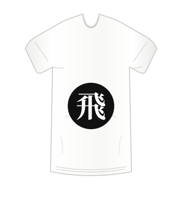
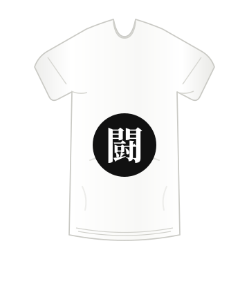
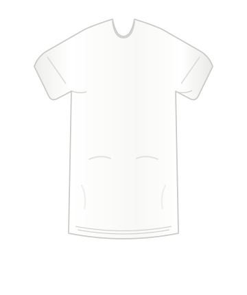

FLY · 飛
T-shirt with encouraging kanji.
To the heights you haven't reached.
$28.00 USD fictional demo price
Choose your sizeEarly exploration · not final
BRAND-001 · same shirt, two compositions
Compare the visual direction around the same white demo T-shirt. Both use the same product title, fictional demo price, and size selector action.
Separate logo/message studies · not the matched hero pair
Each shirt print has a single black circle around the white Mincho-style kanji, with its black Lazy Arie meaning directly above, outside the circle. The hero directions below share their product title and action.

FLY · 飛
To the heights you haven't reached.
$28.00 USD fictional demo price
Choose your size
FIGHT · 闘
To the opponents you will face.
$28.00 USD fictional demo price
Choose your sizeDictionary cross-check (not a fluent-speaker review): 飛 is read とぶ in 飛ぶ, “to fly/soar”; 闘 is read たたかう in 闘う, “to fight,” including struggling against difficulty; 夢 is read ゆめ in 夢, “dream.” FLY, FIGHT, and DREAM are concise English glosses, not exact one-to-one translations; the encouragement lines are creative English copy. Sources: KanjiPedia: 飛, KanjiPedia: 闘う, and Jisho: 夢.
Direction A · modernist study · learner choice

White T-shirt · demo imageDirection B · postmodernist alternative
These are comparison studies, not finished storefront designs. The two shirt studies show plain white tees with a single black circle around the white kanji and its black English meaning above; the characters are draft symbols without Japanese-language review. The matched hero pair below keeps its shared copy and uses the same plain white shirt without the figure illustration.